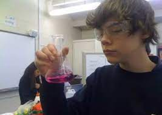

What Are My Hobbies?
In my free time I love to dance. I have been dancing since I was two years old and have never gotten rid of my passion for it. At first I begun ballet for two years until I finally realized that it wasn't my thing and my obsession for hiphop finally begun. Since then I have been dancing almost every single day of my life and I dont plan on stopping anytime soon. I don't have much intrests other than any types of art. I love to paint, draw, listen to music and everything that has to do with them. I might not know the most about sports but I definitly have my favorite teams. For football I live for Manchester United, for American Football I love the Green Bay Packers, and for basketball I like the Golden State Worriors.

I enjoy a variation of diffrent genres of music.
According to my Spotify Account, I love Pop, Rock, Rap, and Hip Hop.
Another intresting fact about me is that when I find something I like, I tend to stick to it for a very long time.
For Example, I discovered a band I liked when I was four, since then the band has broken up but the artists still countinue to release new solo music...
I am still a huge huge fan almost twelve years later.
My top artists have to be One Direction, Harry Styles, Louis Tomlinson, Zayn Malik, Niall Horan, Liam Payne, Fleetwood Mac, Chase Atlantic, 2pac, 5 Seconds of Summer, Taylor Swift, The Paper Kites, Eminem and The Weeknd.
My top three songs have to be Kiwi by Harry Styles, From The Dining Table by Harry Styles and There You Are by Zayn Malik.
Many older adults tell me I have an older soul when it comes to music taste considering I enjoy songs such as Sledgehammer by Peter Gabriel, Nights in White Satin by The Moody Blues, A Whiter Shade of Pale by Procol Harum, The Chain by Fleetwood Mac, You're Still The One by Shania Twain, Big Yellow Taxi by Joni Mitchell, Torn by Natalie Imbruglia, Landslide by Fleetwood Mac, Summer of '69 by Bryan Adams, I Wish That I Had Jessies Girl by Jamie Springler, Its's All Coming Back to Me Now by Céline Dion and many many more.

Which Movies / Tv Shows / Plays Do I Enjoy?
I enjoy many Movies but my top three have to be "Dunkirk" because of the "plot" also known as the cast (Harry Styles), "This is us" because of of the "plot" which is also known as the cast, and finally "No Way Home" Just because I love everything Marvel.
Although... Venom 2 is running a close fourth but because of Andrew and Tobeys apperances it would be wrong of me to not include No Way Home in my top three.
My top three shows would have to be Gilmore Girls, Lucifer, and Euphoria.
My top three favorite plays would have to be "The Phantom of the Opera", "Charlie and the Chocolate Factory", and "Lion King".
I could honestly listen to the soundtrack of the Phantom of The Opera any day of the week and never get bored... Charlie and the Chocolate Factory will never not be funny... and The Lion King will never not be iconic.
The Lion King is my entire childhood in a movie and honestly.. I still cry everytime at THAT scene.

Click here to listen to my favorite song.
And that was my about me!